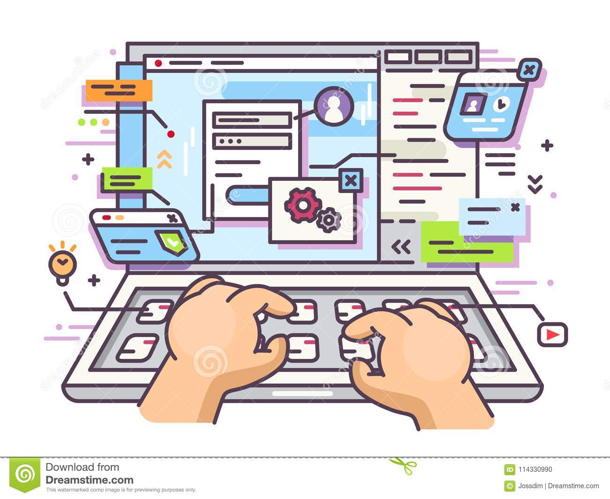

En esta pagina os explicare ciertos apartados, que dimos de forma practica a lo largo del curso:
Hicimos varios trabajos, actividades y hasta un examen. Aprendi a diseñar y a producir la informacion, o por lo menos inetente hacer lo mejor posible
En este tema aprendi hacer hojas de calculo, ajustar cuenta, hacer una tabla con valores y hacer varias formulas y saber cual es la que tenia que poner.Fue uno de los temas que mas me ha gustado.
En esta unidad, nos enseñaron a hacer una presentacion, saber como exponer un trabajo perfectamente, cuanta informacion debe tener el trabajo, cuanto debe durar la presentacion.Este tema ha sido mi favorito.
Pagina principal 